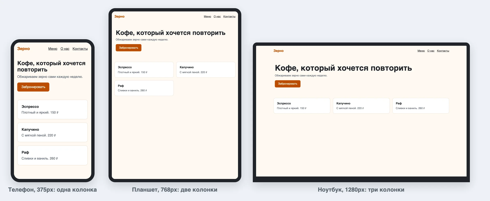
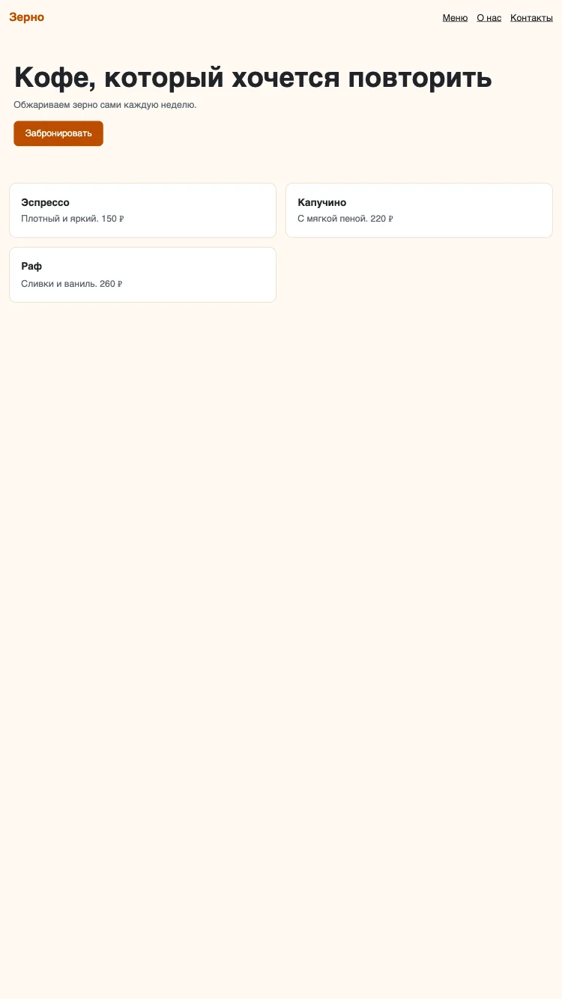
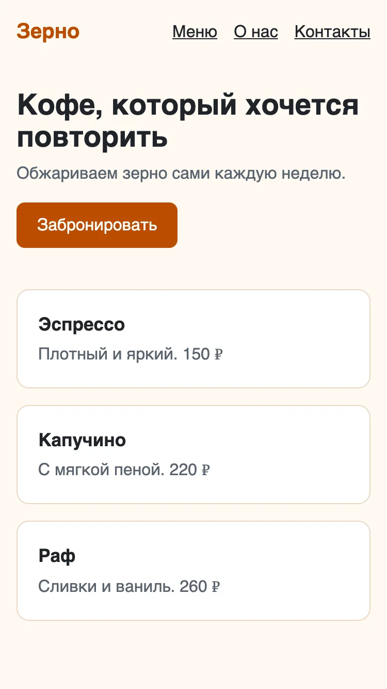
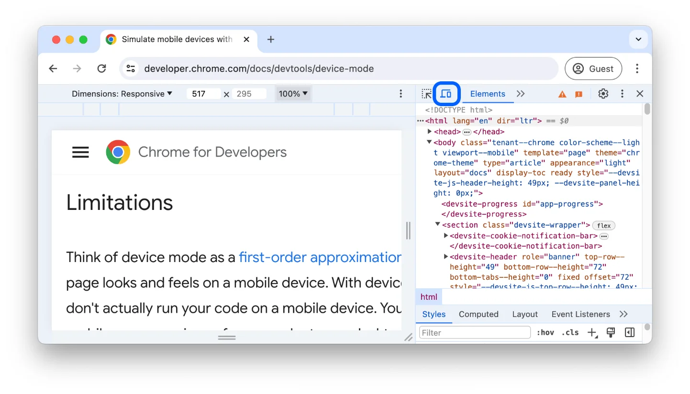
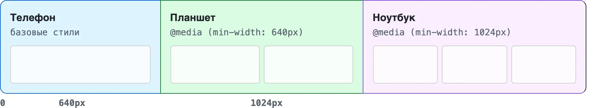
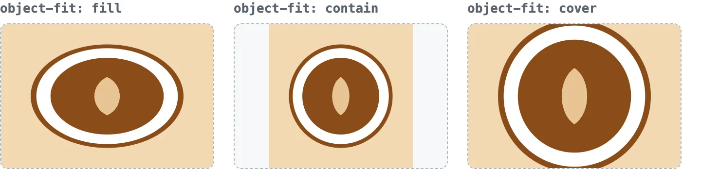
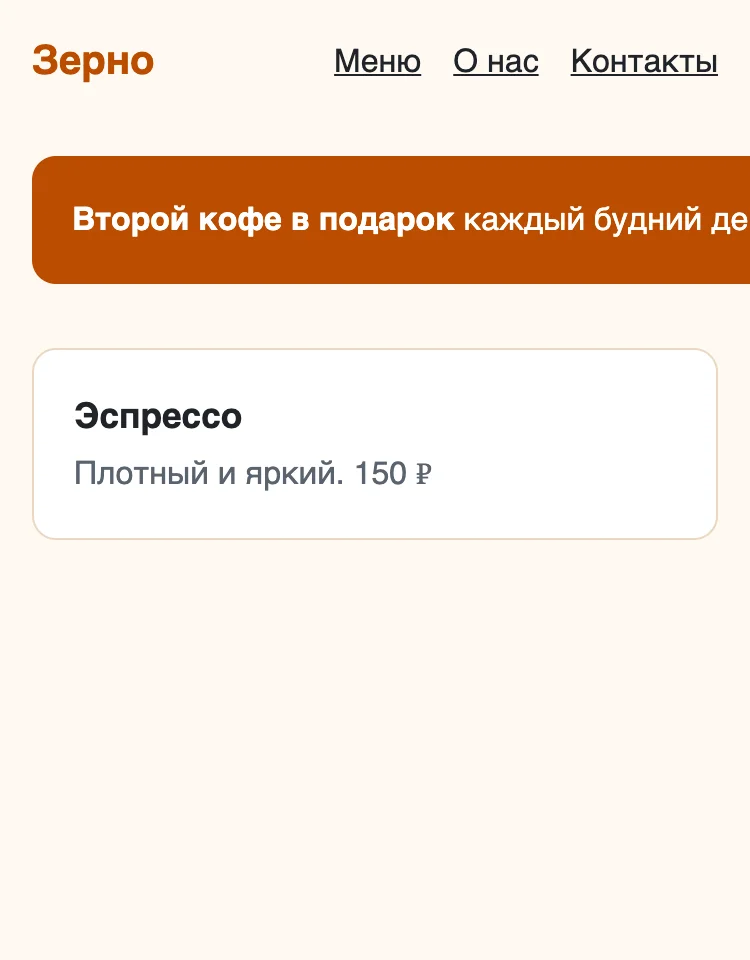
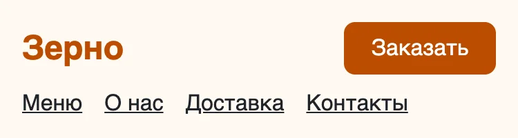
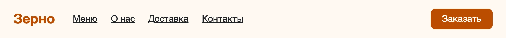
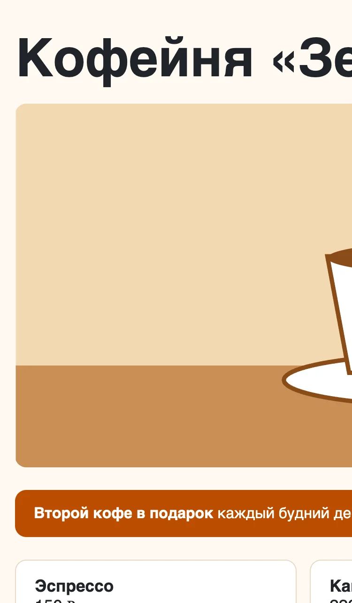

Адаптивная вёрстка
Одна страница для телефона и ноутбука
После урока вы сможете
- Проверять страницу на ширине телефона, планшета и ноутбука
- Верстать сначала под телефон и расширять медиазапросами
- Задавать размеры, которые подстраиваются под экран
- Выносить повторяющиеся цвета и размеры в CSS-переменные
Урок за минуту
- Адаптивная вёрстка — одна страница, которая перестраивается под ширину экрана
- Без
<meta name="viewport">телефон показывает страницу уменьшенной копией ноутбучной - Медиазапрос включает правила только на нужной ширине:
@media (min-width: 640px) { … } - Mobile-first: базовые стили — для телефона, медиазапросы добавляют колонки на широких экранах
max-widthвместоwidth,max-width: 100%у картинок,clamp()для шрифтов — и страница не вылезает за экран
Одна страница — любой экран
Больше половины посетителей открывают сайты с телефона. Делать отдельный сайт под каждое устройство дорого, поэтому верстают одну страницу, которая перестраивается под ширину экрана. Это адаптивная вёрстка.

Весь урок про три вопроса:
- Как узнать, какая ширина у экрана, —
meta viewportи DevTools. - Как поменять стили на нужной ширине — медиазапросы.
- Как сделать так, чтобы ничего не вылезало, — резиновые размеры.
meta viewport
Телефоны появились, когда все сайты были рассчитаны на ноутбуки. Чтобы старые сайты не ломались, телефон по умолчанию притворяется экраном шириной 980px и уменьшает страницу. Строка в <head> отменяет это притворство:
<meta name="viewport" content="width=device-width, initial-scale=1">

Emmet вставляет эту строку сам — по ! и Tab. Если строки нет, медиазапросы на телефоне не сработают.
Режим устройств в DevTools
Проверять сайт на телефоне после каждой правки долго. В Chrome есть режим устройств: он показывает страницу в окне нужной ширины.

- Откройте DevTools: ⌥⌘I.
- Нажмите кнопку с телефоном и планшетом или ⇧⌘M.
- В списке Dimensions выберите устройство, например iPhone SE. Или оставьте Responsive и тяните край страницы мышью.
- Проверьте три ширины: 375, 768 и 1280px.
Самая быстрая проверка
Просто сузьте окно браузера до упора. Если появилась горизонтальная прокрутка — что-то слишком широкое. Найти виновника поможет Elements: наводите на элементы и смотрите на их ширину.
Медиазапросы
Медиазапрос — условие для блока CSS. Правила внутри срабатывают, только когда условие верно:
.cards {
grid-template-columns: 1fr; /* всегда: одна колонка */
}
@media (min-width: 640px) {
.cards {
grid-template-columns: 1fr 1fr; /* от 640px и шире — две */
}
}min-width: 640px читается как «ширина окна не меньше 640px». Правило внутри @media не заменяет весь блок .cards, а дописывает его, как любое правило ниже по файлу.
Ширина превью написана сверху. Поменяйте 300px на число больше неё — условие перестанет выполняться, и блок станет синим.
Сначала телефон
Есть два способа писать медиазапросы. Mobile-first — базовые стили для телефона, а min-width добавляет колонки на широких экранах. Desktop-first — наоборот, с max-width. Берите mobile-first: на телефоне самая простая раскладка, её проще расширять, чем урезать.

Так выглядит CSS страницы из начала урока:
/* телефон — без медиазапроса */
.cards { display: grid; grid-template-columns: 1fr; gap: 16px; }
/* планшет */
@media (min-width: 640px) {
.cards { grid-template-columns: repeat(2, 1fr); }
}
/* ноутбук */
@media (min-width: 1024px) {
.cards { grid-template-columns: repeat(3, 1fr); }
.page { max-width: 1100px; margin: 0 auto; }
}Медиазапросы пишут в конце файла, от меньшей ширины к большей. Брейкпоинты выбирают по содержимому: сужайте окно и ставьте брейкпоинт там, где вёрстка начинает ломаться. 640 и 1024 — удобные числа для старта.
Резиновые размеры
Меньше медиазапросов — меньше работы. Многие размеры можно задать так, что они подстроятся сами.
| Запись | Что значит | Пример |
|---|---|---|
% |
доля ширины родителя | width: 50% |
max-width |
«не шире», но может быть уже | max-width: 960px |
vw |
1% ширины окна | font-size: 5vw |
rem |
размер шрифта страницы, обычно 16px | padding: 1rem |
clamp(min, идеал, max) |
идеал, но не меньше min и не больше max | clamp(2rem, 5vw, 3.5rem) |
Главная замена — width на max-width. width: 960px на телефоне шириной 375px даёт прокрутку, max-width: 960px — просто сжимается.
Картинки
Картинка по умолчанию показывается в своём настоящем размере. Фото шириной 1200px на телефоне вылезет за экран. Одно правило решает это для всех картинок сразу:
img {
max-width: 100%; /* не шире родителя */
height: auto; /* высота — по пропорциям */
display: block; /* без пустой полоски снизу */
}Если картинке нужны точные размеры — например, квадратные превью, — задайте width и height, а object-fit скажет, как вписать в них фото:

Для превью и обложек почти всегда нужен cover.
Разные файлы для разных экранов
Атрибут srcset даёт браузеру выбор: телефону — лёгкую картинку, ноутбуку — крупную. Пока достаточно знать, что он есть. Подробнее — в MDN по запросу «srcset».
Сетки без медиазапросов
Помните строку из прошлого урока? Она сама решает, сколько колонок влезет:
.menu {
display: grid;
grid-template-columns: repeat(auto-fill, minmax(260px, 1fr));
gap: 16px;
}На телефоне влезет одна колонка по 260px, на ноутбуке — три или четыре. То же для Flexbox: flex-wrap: wrap переносит элементы, которым не хватило места.
| Задача | Чем решать |
|---|---|
| Карточки одинаковой ширины | auto-fill и minmax — без медиазапросов |
| Точное число колонок по макету: 1, 2, 3 | медиазапросы |
| Элементы меняются местами или прячутся | медиазапросы и grid-template-areas |
CSS-переменные
В реальном CSS один цвет повторяется десятки раз. Дизайнер поменял фирменный цвет — ищи все места. CSS-переменная решает это: значение записывают один раз и дальше ссылаются на него.
:root {
--color-accent: #bc4c00; /* объявили: имя начинается с -- */
}
.btn {
background: var(--color-accent); /* используем */
}:root — корень документа, то есть <html>. Переменные оттуда видны во всех элементах. Внутри медиазапроса переменную можно переопределить — и все места, где она используется, поменяются разом.
Поменяйте #bc4c00 на #0969da — перекрасятся логотип, рамка, кнопка и цена.
Частые ошибки
Нет meta viewport
На телефоне страница мелкая, медиазапросы не срабатывают. Первым делом проверьте <head>.
Фиксированная ширина в пикселях
width: 600px у блока на телефоне шириной 375px — горизонтальная прокрутка и обрезанный текст. Нужно max-width.

Только наведение мышью
На телефоне нет :hover. Если меню открывается только по наведению, с телефона до него не добраться. Всё важное — по клику.
Мелкие кнопки и ссылки
Палец больше курсора. Кнопки и ссылки в меню — не меньше 44 на 44 пикселя, с промежутками между ними.
Шпаргалка
<meta name="viewport" content="width=device-width, initial-scale=1">:root { --color-accent: #bc4c00; } /* переменные */
img { max-width: 100%; height: auto; } /* картинки не вылезают */
.page { max-width: 1100px; margin: 0 auto; }
h1 { font-size: clamp(2rem, 5vw, 3.5rem); }
/* телефон */
.cards { display: grid; gap: 16px; }
/* планшет */
@media (min-width: 640px) {
.cards { grid-template-columns: 1fr 1fr; }
}
/* ноутбук */
@media (min-width: 1024px) {
.cards { grid-template-columns: repeat(3, 1fr); }
}Квиз
- 1. Что будет на телефоне, если в
<head>нет meta viewport?Без viewport телефон притворяется широким экраном и уменьшает страницу. Медиазапросы для узких экранов не срабатывают. - 2. Когда сработает
@media (min-width: 640px) { … }?min-width — «не меньше». От 640px и шире. - 3. Что значит mobile-first?Начинаем с самой простой раскладки и расширяем её на больших экранах.
- 4. Блок с
width: 900pxна телефоне создаёт горизонтальную прокрутку. Как исправить проще всего?max-width разрешает быть уже. На ноутбуке — 900px, на телефоне — по ширине экрана. - 5. Что делает
font-size: clamp(2rem, 5vw, 3.5rem)?clamp держит идеальное значение в заданных границах. - 6. Какое правило не даст картинкам вылезать за родителя?max-width 100% — не шире родителя, height auto сохраняет пропорции.
- 7. Как объявить и использовать CSS-переменную?Имя начинается с двух дефисов, значение берут через var().
- 8. Когда
repeat(auto-fill, minmax(260px, 1fr))удобнее медиазапросов?Grid сам решает, сколько колонок по 260px влезет. Если нужно ровно 1, 2 и 3 — медиазапросы.
Задания
Все задания проверяются на трёх ширинах. Откройте страницу, включите режим устройств (⇧⌘M) и проверьте плашку на 375, 800 и 1280px. Меняйте ширину — страница перепроверится сама, ширина видна на плашке.
Адаптивный каталог
В homework/08-responsive/task-1 шесть карточек меню. Сделайте сетку по принципу «сначала телефон»:
Перетащите картинку сюда, вставьте из буфера ⌘+V или
- До 640px — одна колонка, от 640px — две, от 1024px — три
- Промежутки между карточками — 16px
- От 1024px страница не шире 1100px и стоит по центру
- Плашка на трёх ширинах: всё пройдено
Шапка на телефоне
В task-2 шапку сверстали только под ноутбук: на телефоне она уезжает за экран. Переделайте:
Перетащите картинку сюда, вставьте из буфера ⌘+V или
- Добавьте в
<head>meta viewport - Телефон: логотип слева и кнопка справа на одной строке, меню — второй строкой
- От 640px: логотип, меню через 32px и кнопка у правого края — в одну строку
- Плашка на трёх ширинах: всё пройдено


Подсказка: grid-template-areas из прошлого урока, внутри медиазапроса — другая схема.
Цвета в переменные
В task-3/css/style.css фирменный цвет повторяется четыре раза, цвет текста — три, серый — два, скругление — два. Вынесите их в :root:
-
--color-accent,--color-text,--color-muted,--radius - Во всех местах вместо значения —
var(…) - Страница выглядит как раньше
- Плашка: всё пройдено
Проверка подменяет каждую переменную и смотрит, что поменялось. Пропущенное место она найдёт.
Починить страницу
Страницу кофейни в task-4 сверстали под экран 960px. На ноутбуке она выглядит как в макете, а на телефоне разваливается:

Перетащите картинку сюда, вставьте из буфера ⌘+V или
- Нет горизонтальной прокрутки ни на одной ширине
- Картинка на всю ширину содержимого, пропорции сохранены
- Заголовок: на телефоне не больше 36px, на ноутбуке — 56px, между ними — плавно
- Меню: на телефоне одна колонка, на ноутбуке три
- На ноутбуке всё как было
- Плашка на трёх ширинах: всё пройдено
Ответы из полей выше сохраняются в этом браузере сами — можно закрыть страницу и вернуться. Когда закончите, сформируйте отчёт и отправьте архив ментору.
Ответы хранятся отдельно для каждого способа открыть курс: файлом, через npm start или по ссылке на GitHub Pages. Открывайте курс всегда одинаково.